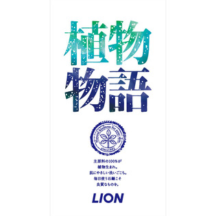

返回列表
产品名称：植物物語 化粧石鹸

ライオン 植物物語 化粧石鹸 ９０ｇＸ３
メーカー ライオン
JANコード 4903301170457
商品の特徴
主原料の100％が植物生まれ。肌にやさしい洗いごこち。毎日使う石鹸こそ良質なものを。
成分・分量
【成分】石ケン素地、パーム脂肪酸、香料、カミツレエキス、エチドロン酸、EDTA-2Na、水、エタノール、BG、酸化チタン
用法及び用量
90gX3